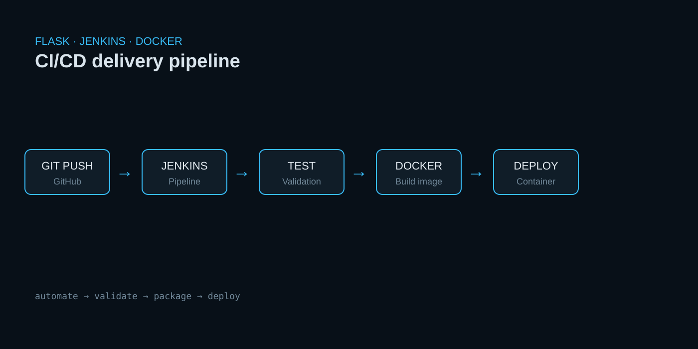
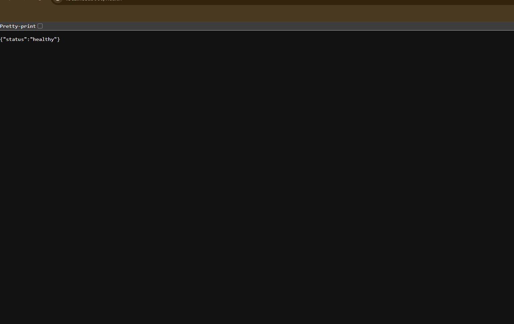
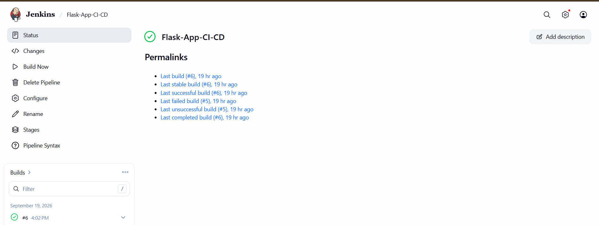
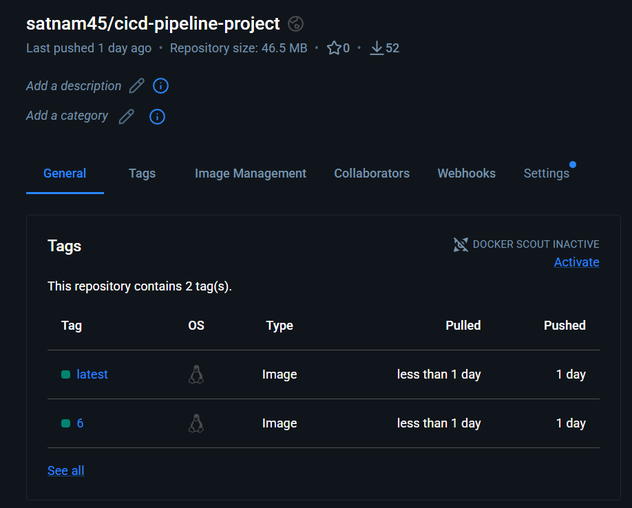
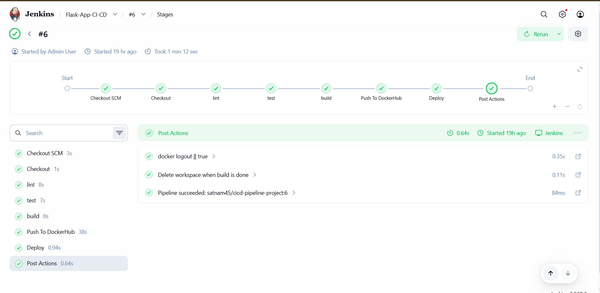

PROJECT 01 · CI/CD AUTOMATION
Flask Application — Jenkins CI/CD Pipeline
A CI/CD pipeline that automates application testing, Docker image creation, publishing to Docker Hub, and deployment.

PROJECT OVERVIEW
Automating the path from code change to deployment.
This project demonstrates a practical CI/CD workflow for a Flask application. Jenkins is configured to automate the build process when application changes are pushed through Git.
The pipeline covers testing, Docker image creation, publishing to Docker Hub, and deployment. It also provided hands-on practice with Git workflows, Docker image management, and deployment troubleshooting.
WORKFLOW
CI/CD Pipeline

Git Push
Application changes enter the Git workflow.
Jenkins
Automated build pipeline is triggered.
Test
Application validation runs in the pipeline.
Docker
Application image is created and published.
Deploy
The container is deployed for the application.
PROJECT SCREENSHOTS
Real screenshots showcasing the application, deployment workflow, and infrastructure used in this project.




SKILLS DEMONSTRATED
What this project shows.
CI/CD pipeline automation with Jenkins.
Docker containerization and image management.
Git-based source control workflow.
Deployment troubleshooting on Linux.
Next project.
Deployed Full Stack Chat Application →